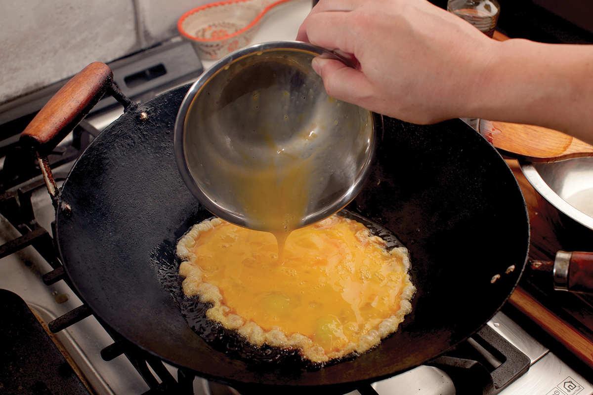
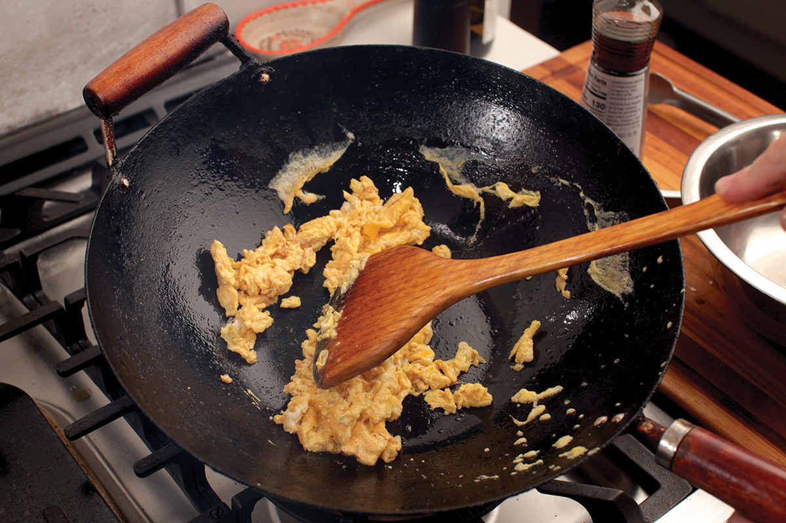
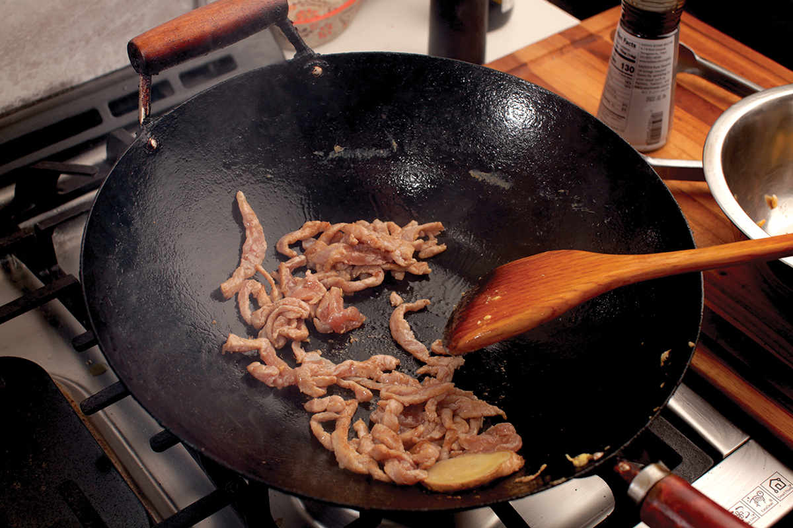
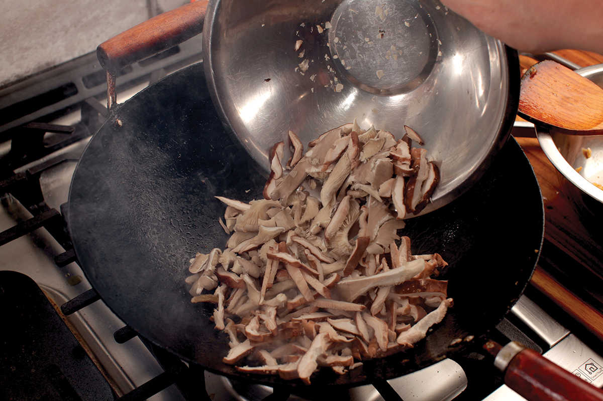
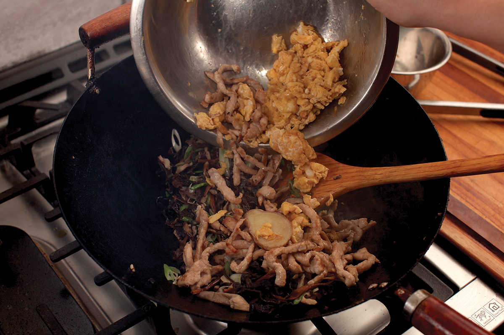
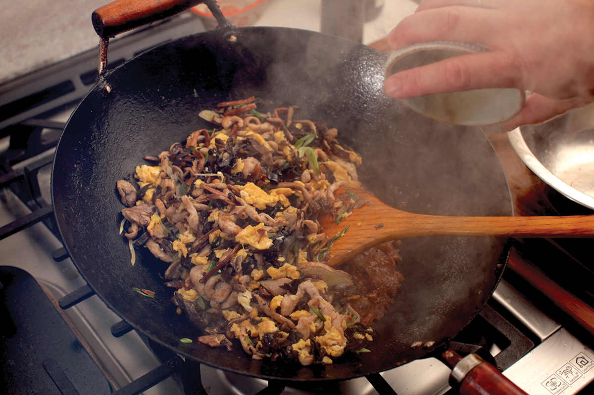

MOO SHU (MOO SHI) MUSHROOMS OR MOO SHU PORK
|
Yield Serves 4 Active Time 20 minutes Total Time 40 minutes |
If you prefer to make moo shu pork, omit the mushrooms, increase the pork to 12 ounces, and double all of the pork marinade ingredients. Proceed as instructed, stir-frying the pork in two separate batches, adding the scallions, wood ears, and daylilies to the second batch of pork as instructed in Step 7. |
INGREDIENTS
The Dry Ingredients:
¼ cup (½ ounce/about 15 g) dried Chinese wood ear mushrooms
¼ cup (½ ounce/about 15 g) dried daylily buds
For the Pork:
4 ounces (120 g) pork loin, pork sirloin, chicken breast, or extra-firm tofu, cut into thin slivers
1 teaspoon (5 ml) Shaoxing wine or dry sherry
1 teaspoon (5 ml) light soy sauce or shoyu
¼ teaspoon (0.5 g) freshly ground white pepper
Pinch of kosher salt
Pinch of MSG (optional)
1 teaspoon (3 g) cornstarch
For the Sauce:
1 tablespoon (15 ml) Shaoxing wine or dry sherry
1 tablespoon (15 ml) light soy sauce or shoyu
½ teaspoon (1 g) freshly ground white pepper
For the Stir-Fry:
¼ cup (60 ml) roasted sesame oil
3 large eggs, thoroughly beaten with a pinch of kosher salt
2 slices fresh ginger
8 ounces (225 g) mixed sliced mushrooms (see here)
2 scallions, thinly sliced on a sharp bias
¼ teaspoon (about .5 g) MSG (optional)
Kosher salt and freshly ground white pepper
To Serve:
Mandarin Pancakes (here) or warm flour tortillas
Hoisin sauce or sweet bean sauce
DIRECTIONS
1Rehydrate the Dried Ingredients: Place the wood ears and daylily buds in a large bowl or measuring cup large enough to allow for them to expand about fourfold. Cover with very hot water and set aside until rehydrated, about 15 minutes. Drain thoroughly. Remove tough centers from the wood ears, then thinly slice them. Cut the daylilies into 2-inch pieces.
2While the Wood Ears and Daylilies Rehydrate, Marinate the Pork: Place the pork in a medium bowl, cover with cold water, and vigorously agitate it. Drain through a fine-mesh strainer set in the sink and press on the pork with your hands to remove excess water. Return the pork to the bowl and add the wine, soy sauce, white pepper, a pinch of kosher salt, a pinch of MSG, and the cornstarch. Stir vigorously with your fingertips or chopsticks for 30 seconds. Set aside for 15 minutes at room temperature.
3Meanwhile, Make the Sauce: Combine the wine, soy sauce, and white pepper in a small bowl and whisk with a fork until no lumps remain.
4BEFORE YOU STIR-FRY, GET YOUR BOWLS READY:
5Cook the Eggs: Heat a wok over high heat until lightly smoking. Add 2 tablespoon (15 ml) of the sesame oil and swirl to coat. Pour the beaten eggs into the center and cook without moving them for 10 seconds. Continue to cook, stirring and breaking up the eggs with a spatula until they are barely set, 30 to 45 seconds. Transfer the eggs to a large bowl.
6Wipe out the wok and return it to high heat until lightly smoking. Add 1 tablespoon (15 ml) of the remaining sesame oil and swirl to coat. Add one slice of the ginger and let sizzle for 5 seconds. Immediately add the pork and stir-fry until the pork is no longer pink and is mostly cooked through, about 1 minute (if making Moo Shu Pork instead of Moo Shu Mushrooms, cook the pork in two batches—see Note). Transfer to the bowl with the eggs.
7Wipe out the wok and return to high heat until lightly smoking. Add the remaining 1 tablespoon (15 ml) oil and swirl to coat. Add the remaining ginger slice and let sizzle for 5 seconds. Immediately add the mixed mushrooms and stir-fry until the mushrooms are lightly browned around the edges, 2 to 3 minutes. Add the scallions, wood ears, and daylilies and stir-fry until softened and fragrant, about 30 seconds.
8Add the pork and eggs back to the wok and toss everything to combine. Stir the sauce and add to the wok by pouring it around the edges. Stir-fry everything together to combine and season to taste with salt and more white pepper. Transfer to a serving platter and serve immediately with Mandarin pancakes and hoisin sauce.





